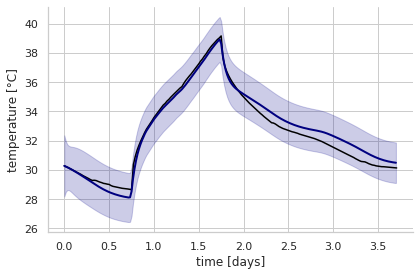

Chapter 12 The pySIP library (Python)
The previous chapters on this series showed the theory behind linear stochastic state-space models. The theory was then applied by calibrating a simple 2R2C model on the heat dynamics of an unoccupied test house. The purpose was to give a transparent overview of the mechanics of state-space models and the Kalman filter. In practical applications however, we will wish to ensure that we obtained a robust predictive model, suitable for building energy performance assessment and prediction of energy use. Additional tools are required to assist in model selection, diagnostics of convergence, validation of calibrated models, and eventually Bayesian inference. This is why the pySIP python library for stochastic state-space inference and prediction was developed.
pySIP provides a framework for infering continuous time linear stochastic state-space models. For that purpose, it is possible to chose between a frequentist and a Bayesian workflow. Each workflow allows to estimate the parameters, assess the inference and model reliability, and perform model selection.
This page is an example of how pySIP can be used, with the same data and model structure as the previous notebook on state-space models. The following code is provided as an example in the pySIP repository.
We are considering the same experimental building, and the same measurement period, as in the previous notebook.

The building is monitored by a variety of sensors, but the present study only uses records of indoor temperature and prescribed heating power, in addition to weather data. The indoor temperature profiles used here have been averaged over several sensors distributed in the living space. An experimental sequence of four days was used in this study.
Some imports first, then we load the data.
import pandas as pd
import numpy as np
from pysip.statespace import TwTi_RoRi
from pysip.regressors import FreqRegressor as Regressor
# Reading the data
df = pd.read_csv('data/statespace.csv').set_index('Time')
df.drop(df.index[-1], axis=0, inplace=True)
# pySIP's fit() method takes a dataframe df as argument
# It also needs to be passed the labels of inputs and outputs in this dataframe
inputs = ['T_ext', 'P_hea']
outputs = 'T_int'
# The time can be scaled on daily units instead of seconds.
# This brings heat capacities to a range closer to other variables
sT = 3600.0 * 24.0
df.index /= sTWe imported the TwTi_RoRi model, which is similar to the 2R2C model of the previous notebook, except that solar aperture coefficients are removed. This is fine since their estimated values were very low.
Parameters are specified as a list of dictionaries. Each parameter has a value in the constrained space \(\theta\) and in the unconstrained space \(\eta\). These two values are linked by the relation
\[ \theta = \mathrm{loc} + f(\eta) . \mathrm{scale}\]
where loc and scale are keywords of a parameter’s dictionary, indicating location and scaling values. A parameter may be transformed by a function \(f\), in order to search on a log scale for instance. More options on parameter specification are given in the documentation
pySIP works with either a frequentist and a Bayesian regressor. The frequentist regressor, used in this example, applies maximum likelihood estimation by the BFGS algorithm.
# Specification of parameters
parameters = [
dict(name='Ro', value=1.0, scale=0.1, transform='log'),
dict(name='Ri', value=1.0, scale=0.01, transform='log'),
dict(name='Cw', value=1.0, scale=1e7 / sT, transform='log'),
dict(name='Ci', value=1.0, scale=1e6 / sT, transform='log'),
dict(name='sigw_w', value=1.0, scale=0.01 * sT ** 0.5, transform='log'),
dict(name='sigw_i', value=1.0, scale=0.01 * sT ** 0.5, transform='log'),
dict(name='sigv', value=1.0, scale=0.01, transform='log'),
dict(name='x0_w', value=1.0, scale=25.0, transform='log'),
dict(name='x0_i', value=26.7),
dict(name='sigx0_w', value=1.0, transform='fixed'),
dict(name='sigx0_i', value=1.0, transform='fixed'),
]
# Definition of the regressor, and model fitting
reg = Regressor(TwTi_RoRi(parameters, hold_order=1))
out = reg.fit(df=df, inputs=inputs, outputs=outputs)## Optimization terminated successfully.
## Current function value: -179.300653
## Iterations: 43
## Function evaluations: 53
## Gradient evaluations: 53print(out[0])## θ σ(θ) pvalue |g(η)| |dpen(θ)|
## Ro 1.937e-02 1.459e-03 0.000e+00 3.125e-05 2.664e-15
## Ri 2.276e-03 9.802e-05 0.000e+00 3.569e-05 1.930e-15
## Cw 1.671e+02 1.004e+01 0.000e+00 2.702e-05 4.798e-17
## Ci 3.026e+01 1.409e+00 0.000e+00 1.721e-05 1.463e-17
## sigw_w 5.120e-01 6.462e-02 2.909e-13 8.486e-06 3.296e-15
## sigw_i 3.119e-04 3.995e-02 9.938e-01 1.056e-05 8.879e-09
## sigv 6.697e-02 3.994e-03 0.000e+00 2.690e-05 2.229e-18
## x0_w 3.010e+01 1.054e+00 0.000e+00 4.369e-05 6.896e-17
## x0_i 3.027e+01 9.349e-01 0.000e+00 1.228e-06 0.000e+00Note that the parameter names are different than on the previous notebook, but the estimation results are similar. The calculation is much faster than what we did with scipy’s curve_fit method, and also more reliable because of the choice of algorithm.
Finally, we can compare the fitted model output with the data.
